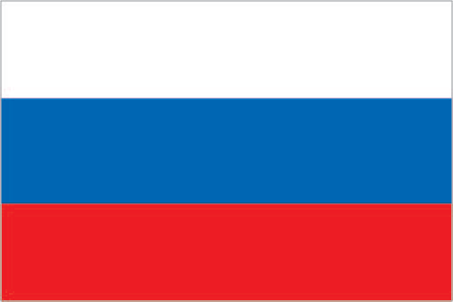

Russia

Government
- Chief of State: President Vladimir Vladimirovich PUTIN
- Head of Government: Premier Dimitriy Anatolyevich MEDVEDEV
- Government Type: semi-presidential federation
- Capital: Moscow
- Legislature:
- Federal Assembly or Federalnoye Sobraniye (170 seats)
- State Duma or Gosudarstvennaya Duma (450 seats)
- Judiciary:
- Supreme Court of the Russian Federation (70 members)
- Constitutional Court (19 members)
Geography
- Area:
- Total: 17098242 sq km
- Land: 16377742 sq km
- Water: 720500 sq km
- Climate:
- ranges from steppes in the south through humid continental in much of European Russia
- subarctic in Siberia to tundra climate in the polar north
- winters vary from cool along Black Sea coast to frigid in Siberia
- summers vary from warm in the steppes to cool along Arctic coast
- Natural resources:
- oil
- natural gas
- coal
- many strategic minerals
- reserves of rare earth elements
- timber
Society
- Population: 142.3 million
- Language: Russian (official) 85.7%, Tatar 3.2%, Chechen 1%, other 10.1%
Economy
- Economic Overview: reforms have stalled in recent years and Russia remains a predominantly statist economy with a high concentration of wealth in officials' hands, particularly in the energy, transportation, and banking sectors; as one of the world's leading producers of oil and natural gas Russia is vulnerable to boom and bust cycles that follow swings in global commodity prices
- GDP: $4 trillion
- GDP per capita: $27900